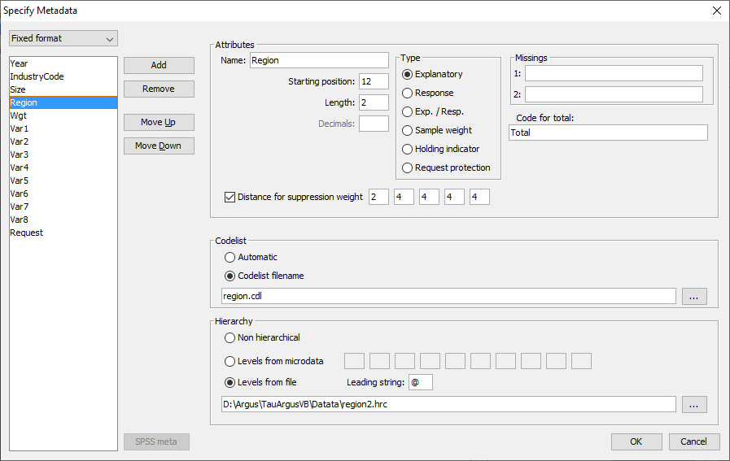
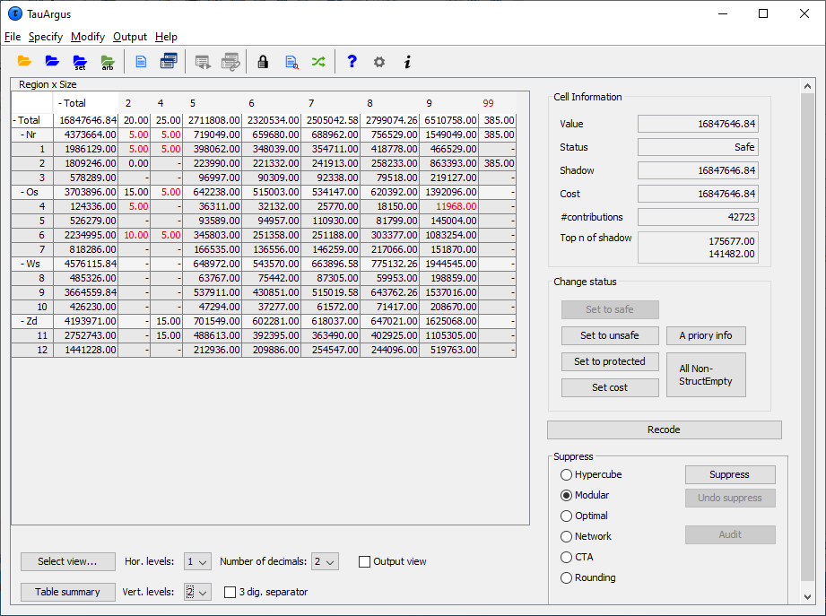
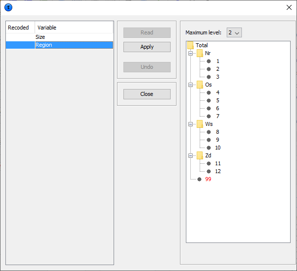

3 A tour of \(\tau\)-Argus
In this chapter, we explain and display the key features of \(\tau\)-Argus. \(\tau\)-Argus is a menu driven program, and here we describe a number of menu steps the user will follow in order to prepare a table for output in a ‘safe’ form. The aim of the tour is to guide the user through the basic features of the program without describing every feature in detail. The only pre-requisite knowledge is basic experience of the Windows environment. In Chapter 4 (Reference) a more systematic description of the different parts of \(\tau\)-Argus will be given. Chapter 3 can be read as a standalone chapter as there is enough detail to enable the user to run the program. However, not every option is covered and the user is pointed in the direction of the Reference chapter in a number of instances. In addition, back references to the theory explained in Chapter 2 are also indicated. In this tour we will use the data in the file tau_testW.asc, which comes with the installation of \(\tau\)-Argus.
This file will be installed in a subdirectory of the installation called data. In most situations the user will not have write permission in that directory. So saving any information must be done in a folder,where the user has write permission.
In this tour we will start with the fixed format data file tau_testW.asc, build a table from that file and go through the process of disclosure control and finish with saving a protected safe table.
The key windows for preparation of the data and the processes of disclosure control (depicted graphically in the figure in Section 2.16) are explored in this tour, which are given below.
3.1 Preparation
First steps. Before using \(\tau\)-Argus for the first time, some options should be set to make \(\tau\)-Argus better usable in your environment. E.g. you can select the solver you want to use in secondary cell suppression. See Section 3.1.1
Open Microdata. This involves selecting both the microdata and the associated metadata. See Section 3.1.2
Specify Metafile. This shows how the metafile can be entered when there in no metafile available, or can be edited after being read in but before any tables are being specified. This includes options such as declaring variables to be explanatory or response, and setting up the hierarchical structure of the data and the location of the variables in the file. See Section 3.1.3
Specify Tables. Declare the tables for which protection is required, along with the safety rule and minimum frequency rule on which the primary suppressions will be based. When this has been finished the tables will be computed or read in. See Section 3.1.4
Process of Disclosure Control. The main window of \(\tau\)-Argus will show the table that we have computed or read in and when all the safety rules for primary suppressions have been applied.
You can inspect the table; get information about the number of unsafe cells etc. It contains options to modify the table using global recoding. There are several options to make the table safe via secondary cell suppression and rounding. Also an audit procedure is available to check quality of any secondary suppression pattern. See Section 3.2
Save Table. The user can save the ‘safe’ table in a number of formats as will be seen in Section 3.3.
3.1.1 First steps
Via (Help|Options) you can open the options window.
Before starting the process of protecting a table, you can customise \(\tau\)-Argus. Some methods for secondary suppression (the modular and the optimal), but also the audit procedure require an external linear programming solver. For the complex problems of \(\tau\)-Argus we have concluded that the use of high quality commercial solvers can be efficient. However also a free solver can be chosen as a good alternative. Although \(\tau\)-Argus is freeware software these solvers are commercial packages and you have to acquire a licence for them separately. More information can be found on the casc-website (https://research.cbs.nl/casc/). The choice of this solver must be made before protecting a table. The choices are either Xpress or cplex or the free solver soplex, the different LP_solvers supported by \(\tau\)-Argus. See also Section 2.9 for more details.

For cplex the name of the licence file must specified.
Once this window has been opened details of the solver can be entered. Also the maximum time the solver is allowed to spend on each sub-table in Modular can be specified. However always a feasible solution is sought.
And the name of the logbook, by default taulogbook.txt in thetemp-directory can be chosen.
3.1.2 Open a microdata file
In this tour we only deal with how to open a fixed format microdata file (see Section 3.1.2 to Section 3.1.4). If an already constructed table is to be used, then go to the Reference chapter (Section 4.3.2). To start disclosure controlwith \(\tau\)-Argus there are three possible options:
Open a ascii microdata file from which a table can be constructed,
Open an already completed table,
Open a SPSS systemfile containing the microdata
Opening an already completed table is not part of this tour (See Section 4.3.2). Also the SPSS-option (see Section 4.3.1) is not part of this tour.
Both a microdata file and the metadata file describing this microdata file are required. The microdata file must be either a fixed format ascii file or a free format file with a specified separator. By clicking (File|Open Microdata) you can specify both the name of the microdata file and the name of the file containing the metadata.

\(\tau\)-Argus, expects the microdata and metadata file to be stored in separate files. The simplest way to use the program is to use the extension .ASC for the (fixed format) data file and .RDA (Record Description for Argus) for the metadata file. If the name of the metadata file is the same as the data file, except for the extension, and it already exists in the same directory, \(\tau\)-Argus will fill in the name of this metadata file automatically in the second text box. If no metadata file is specified, the program has the facility to specify the metadata interactively via the menu option (Specify|Metafile). This is also the place to make changes to the metadata file. In Section 3.1.3 we will give a description of the metadata file for \(\tau\)-Argus.
3.1.3 Specify metafile
When you enter or change the metadata file interactively using \(\tau\)-Argus the option (Specify|Metafile) will bring you to the following screen:

The key elements of this window are the definitions for each variable. Most variables will be defined as one of the following.
Explanatory Variable: a variable to be used as a categorical (spanning) variable when defining a table.
Response Variable: a numerical variable to be used as a cell item in a table.
Weight variable: a variable containing the sampling weighting scheme.
More details on these variables along with the others options can befound in the Reference chapter (Section 4.4.1).
Other important features of this window are as follows.
Codelist: \(\tau\)-Argus will always automatically build the codelists for the explanatory variables from the datafile. However you can enhance the presentation of the information if you can specify a codelist file (a list-of-codes of the explanatory variables) as follows.
Automatic: The codelist is created from the categories in the variable.
Codelist file: The codes can be read in from an external file. Each category can contain a label. The codelist is only used for enhancing the presentation but always \(\tau\)-Argus will build a codelist from the datafile itself.
Missing values: this gives information on the missing values which are attached to a codelist. Two distinct missing value indicators can be set (the reason for this is for the purposes of indicating different reasons for missing values: for example perhaps non-responses of different forms: maybe one code for the response ‘don't know’, and another for’refusal’). Missing values however are not required.
Hierarchical codes: The hierarchy can be derived from
the digits of the individual codes in the data file or
a specified file containing the hierarchical structure. See Section 5.2
Examples are shown in the metafile information below.
3.1.3.1 The Metafile
The metafile describes the variables in the microdata file, both the record layout and some additional information necessary to perform the SDC-process. Each variable is specified on one main line, followed by one or more option lines. The options ine always start with an option name enclosed in "<" and ">". An example is shown here. The leading spaces shown only serve only to make the file more readable; they have no other meaning.
3.1.3.2 Details of the variables
‘Year’ : For this variable begins on position 1 of each record , is2 characters long and missing values are represented by 99. It is alsorecodeable implicitly stating that it is an explanatory or spanningvariable used to create the tables.
‘IndustryCode’: For this variable begins on position 4 of eachrecord and is 5 characters long. Missing values are represented by99999. As well as being recodeable this variable is hierarchical andthe hierarchy structure is specified. The first 3 characters are inthe top hierarchy level, the 4th character in the second level andthe 5th character in the lowest level.
‘Size’: For this variable begins on position 9 of each record and is2 characters long, and missing values are represented by 99. It isalso recodeable.
‘Region’: For this variable begins on position 12 of each record andis 2 characters long. There is no missing value. There is a codelistfile region.cdl and of a hierarchical codelist file region2.hrc.Examples of these files are shown here.
Note: the codelist file is not essential; the content is only usedto enhance some information on the screen. The hierarchicalinformation however plays an essential role as it describes thestructure of the table and the relation between the cells.
Note: In both files the code for Total is not specified. \(\tau\)-Argusalways explicitly assumes that there will be a total in each dimensionof the table. Without totals there are no additivity constrains andhence there is no problem of Secondary Cell Suppression.
The file region.cdl:
The file region.hrc:
Additional details of these coding files can be found in Section 5.3 and Section 5.2.
3.1.4 Specify tables
When the metadata file is ready, the tables to be protected can be specified. This is achieved via Specify|Tables. A window to specify the tables is presented. In the example here we have a 2 dimensional table (2 explanatory variables; Size x Region) and a response variable(Var2). A safety rule (\(p\)%-rule) has been defined.

The key elements of this window are as follows.
3.1.4.1 Explanatory variables
On the left is the list box with the explanatory variables.
Click on ‘>>’ moves the selected variables to the next box in which the selected explanatory variables can be seen. From the box on the left hand side, containing explanatory variables, the variables that will be used in the row or the column of the table, in a 2-way table can be selected. Up to six explanatory variables can be selected to create a table, but higher dimensions will restrict the options to process a table.
3.1.4.2 Cell items
The ‘cell items’ box contains the variables, which were declared as ‘response variables’ in the metafile. By using the ‘>>’ button they can be moved to the ‘response variable’ box to be used in the defined table.
3.1.4.3 Response variable
Any variable in the cell items box can be chosen as the responsevariable. Also the implicit variable <freq> for making a frequencytable.
3.1.4.4 Shadow variable
The shadow variable is the variable which is used to apply the safety rule. By default this is the response variable. More details on the Shadow variable can be found in Section 4.4.4 in the Reference chapter.
3.1.4.5 Cost variable
This variable describes the cost of each cell. These are the costs that are minimised when the pattern of secondary suppressed cells are calculated (see Section 2.6 in the Theory chapter for the further details). By default this is the response variable butother choices are possible. If the response or any other explicitly specified variable is used for this purpose, the radio button 'variable' should be selected. Then, any variable name can be transferred from the cell items to the cost variable window. However if the name is empty by default the response variable will be chosen. It is also possible to use the frequency of the cells as a cost-function. This will suppress cells minimising the number of contributors to each cell. A third option is that the number of cells to be suppressed is minimised, irrespective of the size of their contributions (unity option – cost variable is set to 1 for each cell). However this tends to the suppression of totals and marginals. Also a distance function is available. More details will be given inthe Reference Chapter along with an example (Section 4.4.4). Note that choice of the cost variable does not have any impact when using the hypercube method for secondary suppression.
3.1.4.6 Weight
If the data file has a sample weight, specified in the metadata file, the table can be computed taking this weight into account. In this case, the 'apply weights' box should be ticked. More details will be given in the Reference Chapter along with an example (Section 4.4.4).
3.1.4.7 The safety rule
The concept of safety rules is explained in Section 2.6 in the chapter on Theory. In this window the left side of the window allows the type of rule to be selected, this is usually either the dominance rule or \(p\)% rule, along with the necessary parameter values. Several rules together can be set for any particular table.
Additionally, the minimum number of contributors (threshold rule) can be chosen. In the window this is referred to as the ‘Minimum Frequency’.
Now for the readability of this chapter, brief summaries are provided of the Dominance and \(p\)% rules.
3.1.4.8 Dominance rule
This is sometimes referred to as the \((n,k)\) rule. The rule states that if the sum of contributions of the largest \(n\) contributors to a cell is more than \(k\)%, the cell is considered disclosive.
This is the traditional rule; however we recommend to use the \(p\)% rule as a better alternative. The \(p\)%-rule focusses more on the individual contributors to a cell.
3.1.4.9 \(p\)% rule
The \(p\)% rule says that if the value of a cell \(X_1\) can be estimated to an accuracy of better than \(p\)% of the true value then it is disclosive where \(X_1\) is the largest contributor to a cell.
This rule can be written as: \({{\sum\limits_{\mathit{ii} = 3}^{c}x_{i}} \geq \frac{p}{100}}x_{1}\) for the cell to be non-disclosive where c is the total number of contributors to the cell and the intruder is a respondent in the cell.
It is important to know that when entering this rule in \(\tau\)-Argus the value of \(n\) refers to the number of intruders in coalition (who wish to group together to estimate the largest contributor). In general \(n=1\).
A typical example would be that the sum of all reporting units excluding the largest two must be at least \(10\)% of the value of the largest. Therefore, in \(\tau\)-Argus set \(p=10\) and \(n=1\) as there is just one intruder in the coalition, respondent \(X_2\).
Note: we only consider the situation for the largest contributor, as this is the worst case. If the largest is safe all contributors are safe.
The choice of safety rule is specified by the user and the chosen parameters can then be entered. From these parameters symmetric safety ranges are computed automatically prior to the secondary suppressions.
For the minimum frequency rule, a safety range is calculated from the user given range. This is usually a small positive value and is required to enable secondary suppression to be carried out.
A manual safety range is also required for cells that can be made unsafe by intervention of the user.
Other options such as the ‘Request Rule’ or the ‘Holding Rule’ will be looked at in more detail in the Reference chapter (Section 4.4.4).
When everything has been filled in, click '˅' to transport all the specified parameters describing the table to the ‘listwindow’ on the bottom. As many tables as you want may be specified, only limited by the memory of the computer. If a table is to be modified press the ‘^’ button.
3.1.4.10 Creating the Table
Pressing the ‘Compute tables’ button will invoke \(\tau\)-Argus to actually compute the tables requested and the process to start disclosure control may be invoked. \(\tau\)-Argus will come back showing the (first) table in a spreadsheet like view number of unsafe cells per variable, per dimension, as explained in the next Section 3.2.
3.2 The process of disclosure control
When the table(s) have been calculated, the main-window of \(\tau\)-Arguswill show the (first) table.

Safe cells are shown in black, whilst cells failing the safety ruleand/or minimum frequency rule are displayed in red.
Only the top 2 levels of a hierarchy are shown initially. But at the bottom of the window there are options to open more levels. Also clicking on the '+' before a code will open a level of the hierarchy. In the example we have opened the \(3^{rd}\) level of the region variable.
The user now has to decide whether to carry out secondary suppressions immediately or to perform some recoding first. There are other options such as changing the status of individual cells manually, this will be discussed further in the Reference chapter (see Section 4.2).
3.2.1 Cell information
Cells can be selected in the table by clicking with the cursor on a specific cell. In that case, information about the selected cell is shown on the right top part of the window.
The status of the cell can be one of the following. Some of the terms will be explained later in this section but others are expanded upon in the Reference Section 4.2.
Safe: Does not violate the safety rule
Safe (from manual): manually made safe during this session
Unsafe: According to the safety rule
Unsafe (request): Unsafe according to the Request rule.
Unsafe (frequency): Unsafe according to the minimum frequency rule.
Unsafe (zero cell) Unsafe because the zero-cells are considered unsafe.
Unsafe (from manual): Manually made unsafe during this session.
Protected: Cannot be selected as a candidate for secondary cell suppression.
Secondary: Cell selected for secondary suppression.
Secondary (from manual): Unsafe due to secondary suppression after primary suppressions carried out manually.
Zero: Value is zero and cannot be suppressed.
Empty: No records contributed to this cell and the cell cannot be suppressed.
3.2.2 Change Status
The second pane (‘Change Status’) on the right will allow the user tochange the cell–status.
Set to Safe: A cell, which has failed the safety rules, can be declared safe by the user.
Set to Unsafe: A cell, which has passed the safety rules, can be declared to be unsafe by the user.
Set to Protected: A safe cell is set so that it cannot be selected for secondary suppression.
Set Cost: Change the value of the Cost-value for this cell
Use 'a priori' information (see below).
3.2.3 A Priori Info
This option is an a priori option to be mainly used for microdata which allows the user to feed \(\tau\)-Argus a list of cells where the status of the standard rules can be overruled i.e. the status of the cells is already specified. The associated file specifying this information is free format. The format will be:
Code of first spanning variable, Code of second spanning variable,Status of cell (u = unsafe, p = protected (not to be suppressed),s = safe).
Also the cost-function can be changed here for a cell. This will make the cell more likely to become secondary cell suppression, when the value is low or less likely when the value is high.
A full description of the aproiri file can be found in Section 5.6.
3.2.4 Recode
The recode button will bring the user to the recoding system. Recodingis a very powerful method of protecting a table. Collapsed cells usually have more contributors and therefore tend to be much safer.
3.2.4.1 Hierarchical Recoding
The first window shows the variables available for recoding.
In this example, the ‘Region’ variable has been selected for recoding. As ‘Region’ is a hierarchical variable, the codes are shown in a hierarchical tree. The user can either fold or unfold the branches by clicking on the ‘+’ or ‘-’ boxes which results in showing or omitting codes from the table, or by choosing an overall maximum hierarchical level. (See the following windows for details). Pressing the ‘Apply ’button followed by ’Close’ will actually apply the selected recoding and show the resulting table. Press the undo-button – it is now possible to go back to the original recoding scheme. Below this there are two windows, one showing the recode window prior to applying there coding for the hierarchical variable ‘Region’ and the second after the folding of the tree.

The next window shows the new hierarchical codes after collapsing all second level categories.

By clicking 'Apply' and 'Close', we go back to the main windowwhich shows the table after recoding:

3.2.4.2 Non Hierarchical Recoding
In this example the non-hierarchical ‘Size’ variable has been selected to be recoded. The user can either write the required recodings in the edit box or import them from a previously written file. In the example the line 2:2-6 results that categories \(2,3,4,5,\) and \(6\) will be recoded into a new category \(2\). Note that \(\tau\)-Argus will give a warning that some codes have not been recoded. They will remain unchanged. The user will know whether this is harmful or not.

Once the recoding has been applied (both for hierarchical and non hierarchical data) the table can again be displayed. If there are now no cells, which fail the safety rules, the table can be saved as a protected table. However, if there are still anumber of unsafe cells, secondary suppression needs to be carried out. This is necessary as the table is not yet safe. If only the cells failing the safety rules are suppressed, other cell values could be obtained by differencing.
3.2.5 Secondary Suppression
The Suppress button is an important button. It will activate the modules for computing the necessary secondary suppressions as described above. There are a number of options here:
Hypercube
Modular
Network
Optimal
3.2.5.1 Hypercube
This is also known as the ghmiter method. The approach builds on the fact that a suppressed cell in a simple n‑dimensional table without substructure cannot be disclosed exactly if that cell is contained in a pattern of suppressed, non zero cells, forming the corner points of a hypercube.
3.2.5.2 Modular
This partial method will break the hierarchical table down to several non-hierarchical tables, protect them and compose a protected table from the smaller tables. As this method uses the optimisationroutines, an LP-solver is required: this will be either Xpress or cplex, or the free solver The routine used can be specified in the Options window, this will be discussed later.
3.2.5.3 Optimal
This method protects the hierarchical table as a single table without breaking it down into smaller tables. As this method uses the optimisation routines, an LP-solver is required: this will be either Xpress or cplex. The routine used can be specified in the Options window; see Section 4.7.3.
3.2.5.4 Network
This is a Network Flow approach for large unstructured 2 dimensional tables or a 2 dimensional table with one hierarchy (the first variable specified). This method is also based on optimisation techniques, butdoes not require an external solver like Xpress or cplex. As alternatives for cell suppression we can also apply rounding and Controlled Tabular Adjustment (CTA)
3.2.5.5 Rounding
The controlled rounding procedure can be applied. The user has to specify the rounding base. Note that this option requires the Xpress solver or the cplex solver or the free solver. See Section 4.2.5
3.2.5.6 Controlled Tabular Adjustment (CTA)
This method will modify a table such that the unsafe cells are replaced by their upper or lower protection level and the remaining cells are modified such that the table is still additive. See Section 4.2.4
3.2.5.7 Choose the suppression method
The radio-buttons at the right lower part of the window allow selecting the desired suppression method. Clicking on the Suppress button will then start the process of calculating the secondary suppressions. When this process has finished the protected table will be displayed and also the user will be informed about the number of cells selected for secondary suppression and the time taken to perform the operation. The secondary suppressed cells will be shown in blue.

3.2.6 Summary Window
By clicking on 'Table Summary', the summary window is obtained. The summary window gives an overview of the cells according to their status.
Freq: The number of cells in each category
# rec: The number of observations in each category
Sum Resp: Total cell value in each category
SumCost: The sum of the cost variable. Here it is equal to the response variable.

By clicking on 'Close', we return to the table window.
The table can now be written to an output file in the required format. Any cells which have been selected for suppression will be replaced by'X', unless another option is chosen. The safe table can be saved by using 'Output|Save table' menu on the main menu. See Section 4.6.1.
3.3 Save the safe table
When the table is safe it may be written to the hard disk of thecomputer. The user has six options:
As a CSV file. This Comma separated file can easily be read intocplex Excel. Please note that \(\tau\)-Argus uses the ‘,’ as the cplex field-separator in this CSV-file. This might influence opening the cplex CSV file in Excel. A solution for this is to change the settingscplex in the Windows control-panel or use the 'Data|Text to Columns' cplex option of Excel. This is a typical tabular output maintaining the cplex appearance of the table in \(\tau\)-Argus.
A CSV-file for a pivot table. This offers the opportunity to make cplex use of the facilities of pivot tables in Excel. The status of each cplex cell can be added here as an option (Safe, Unsafe or Protected for cplex example). The information for each cell is displayed on a single cplex line unlike standard csv format.
A text file in the format code-value, separated by commas. Here, the cplex cell status is again an option. Also empty cells can be suppressed cplex from the output file if required. The information for each cell is cplex displayed on a single line similar to the CSV file for a pivot cplex table.
SBS format. This is a special format required for sending data to cplex Eurostat.
A file in intermediate format for possible input into another cplex program. This contains protection levels and external bounds for cplex each cell. This table could even be read back into \(\tau\)-Argus.
A file in the JJ-format. This format has been introduced by JJ cplex Salazar as an intermediate between the normal table and the cplex structures required in the optimisation routines.

Finally, a report will be generated to a user specified directory. This report will also be displayed on the screen when the table has been written. It will contain details such as table structure, safety rules (and number of cells failing), secondary suppression method (and number of cell failing) and details of any recodes. An example is shown in the Reference Section 4.6.2. As this is an HTML-file it can be viewed easily later or printed.